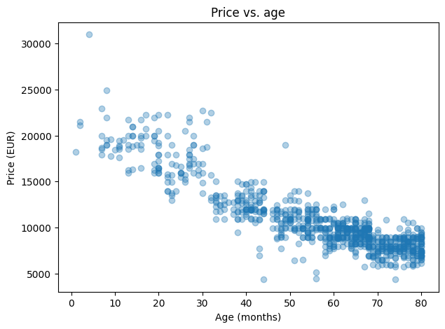

The headline
Our final model explains 91% of the variation in resale price on cars it had never seen, with a typical miss of about EUR 786. We turned it into a one-page pricing guide that a salesperson can use on the floor to anchor a trade-in offer.
The business problem
A dealership running a trade-in promotion needs to estimate what a used Corolla will resell for before making an offer. Offer too much and the margin disappears. Offer too little and the customer walks. They asked us for two things:
- A practical price estimate
- A clear list of the specifications that should actually change the offer, and the ones that shouldn't
Data
1,436 past Corolla sales, with price, age, mileage, engine size, horsepower, fuel type, weight, road tax, guarantees and a long list of optional extras. We built the model on 60% of the sales and tested it on the other 40%, so every accuracy figure below comes from cars the model hadn't seen.
Approach
1. Baseline model. A multiple regression on the required set of specifications. Test R-squared was already 0.882, with an average miss of EUR 890.
2. Diagnostics. Residual plots showed a slight curve and wider misses at higher prices. Cook's distance flagged a handful of extreme records.
3. Cleaning, with a rule. We removed three records with a real data problem, including a car listed with an impossible 16,000 cc engine. That single value had been distorting the engine coefficients. We didn't remove the expensive Corolla Versos just because the model missed them: there were several of them with consistent specs, and deleting only the awkward ones would have been cherry-picking.
4. Trying alternatives one change at a time. We ran forward, backward and stepwise selection as a check, then built our own three models, adding one change each time to see what it bought:
| Model | What changed | Test RMSE |
|---|---|---|
| Baseline | Required predictors | EUR 1,219 |
| Cleaned baseline | Three bad records removed | EUR 1,178 |
| Model A | + Weight, BOVAG guarantee | EUR 1,150 |
| Model B (selected) | + Age squared | EUR 1,075 |
| Model C | + Age x mileage interaction | EUR 1,076 |

Adding age squared made the biggest single difference. Cars lose value fastest when they're new, and a straight line can't capture that. Model C fit the training data slightly better but did a little worse on the test set, so it didn't earn the extra complexity.
Results
| Performance on unseen cars | |
|---|---|
| Share of price variation explained (R-squared) | 91% |
| Typical absolute miss (MAE) | about EUR 786 |
| Cars estimated within EUR 1,000 | 71 out of 100 |
| Cars estimated within EUR 1,500 | 87 out of 100 |

What actually drives the price
- Age comes first. At one year old, an extra month costs about EUR 170 in resale value. By six years old it's closer to EUR 68.
- Mileage is next. Each extra 10,000 km takes about EUR 160 off, holding everything else fixed.
- Automatic climate control is the standout option, worth about EUR 2,170. Ordinary air conditioning is worth about EUR 390 and powered windows about EUR 270.
- Guarantees matter. A BOVAG guarantee adds about EUR 520 and a manufacturer guarantee about EUR 240.
- What doesn't matter: a CD player, a sport badge, a tow bar and automatic transmission showed no reliable premium once the rest of the car was accounted for.
- The engine package should be read as one block. Horsepower, weight, fuel type and road tax overlap heavily, so they tell you whether a car is a higher- or lower-value version. They shouldn't be added up as separate option prices.
From model to the sales floor
The deliverable was a one-page guide written for salespeople, not analysts. It includes a quick-reference grid of estimated prices by age and mileage, a list of what to add for each option, and a worked example:
A four-year-old Corolla with 90,000 km starts at about EUR 10,730. Add automatic climate control and a BOVAG guarantee (about EUR 2,700 together) and the paperwork-based estimate is around EUR 13,400, before the physical inspection.
Because the typical miss is about EUR 786, we told the dealership to think in a price band and to treat the estimate as a ceiling for cars in worse-than-average condition. The model can't see dents, worn tyres or a missing service book.
Files
| File | Contents |
|---|---|
code/corolla_resale_price_model.ipynb |
Full analysis notebook |
report/Corolla_Resale_Value_Report.pdf |
Two-page report for the dealership |
images/ |
Charts used in this write-up |